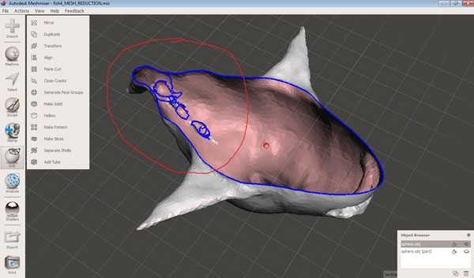
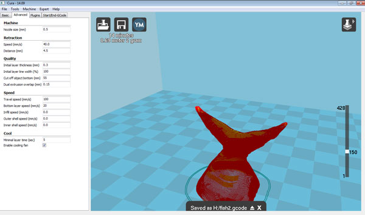
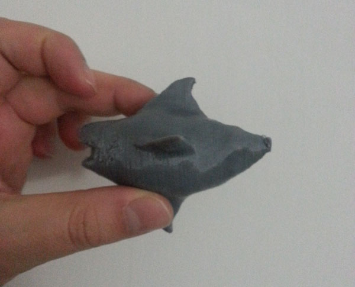

| Type of file |
Description |
Link (Type of file) |
| Fabrication files: vectors(s) / 3D model(s) |
MeshMixer document |
(mix) |
| Fabrication files: vectors(s) / 3D model(s) |
STL files (CURA) |
(stl) |
| Fabrication files: vectors(s) / 3D model(s) |
G-Code (CURA) |
(gcode) |